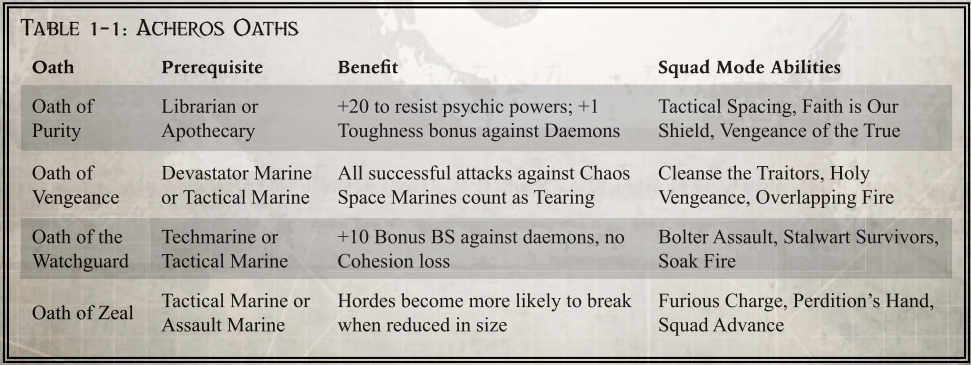

阿克戎斯特殊能力
"不要花时间去了解异教徒。因为在了解敌人的同时，你也可能成为敌人。"
——审判官泰勒曼
在阿克戎斯高地服役，可能会与毁灭力量的信徒发生一系列无休止的冲突。最常见的对手包括叛徒军团成员、装备精良的帝国叛徒，甚至还有从亚空间中产生的噩梦。即使是在死亡守望中服役的星际战士的个性和能力都会受到这些冲突的影响。有些人可能会发展出新的能力，从而提高他们对抗这些敌人的战斗力。而其他人则会因为每天与敌人交战而直接导致性格改变。
获得突出部特殊能力 只有在阿基鲁斯十字军东征的特定前线为死亡守望服务的星际战士才能购买本卷中介绍的突出部特殊能力。这些能力并不是他们所在战团所特有的，也与特定法典的传统无关。相反，这些都是在与特定类型对手的无休止冲突中学到的技巧。其中一些可能是在防御工事内开发的新方法，而另一些则是战斗兄弟在共同服役期间与同伴分享的能力。 这些不同的 "单人模式"、"小队模式 "和 "誓言 "赋予了太空海军星际战士对付特定类型对手特别有效的技巧。学习这些技巧并非一蹴而就。相反，它需要大量的练习和训练；这种训练只有在与使用一套统一战术的敌人进行的无数次战斗中才能获得。一般来说，只有那些在阿基鲁斯十字军不同地域长期作战的人才能分享这些战术。 玩家角色只有在某一特定地域执行过至少两次任务后，才能选择 "地域能力"。届时，他们可以选择使用在这些任务中获得的 Xp 购买与该突出部相关的任何能力。在 Achilus 十字军东征的该突出部每多执行两次任务，就可以多购买一项突出部能力。选择其中一种能力作为进阶并不构成精英进阶。 |
阿克戎斯行为举止
持续接触混沌势力，尤其是那些背离神皇之光的星际战士，会产生深远的影响。即使是死亡守望星际战士，也会因为知道他们所反对的叛徒曾经是自己的兄弟而开始消磨毅力。尽管他们不断地训练、祈祷和学习，但战斗兄弟可能会开始重新考虑他们的观点。这些怀疑的时刻甚至会引发角色个人气质的改变。当然，不同的人对同样的冲突可能会做出截然不同的反应。本节为开始根据情况调整核心价值观的 "战斗兄弟 "提出了一些备选方案。请注意，角色 "个人风格 "的任何改变都应是在整个战役过程中所采取的行动的结果。玩家可以自由做出这样的改变，但我们鼓励玩家认真考虑与调整相关的动机和后果。他们的新举止也可能会改变他们与敌人和战友的互动方式。我们鼓励玩家在选择其中一种 "个人形象 "之前认真考虑所有这些后果。
苦涩
不断接触那些对帝皇失去信心、选择站在毁灭之力一边的人，会磨损战斗兄弟的灵魂。这些黑暗诸神的仆从曾经是手足情深的兄弟。他们的身体里承载着他们的原体和皇帝的精髓。他们将这些工具用于对抗创造他们的帝国，是对帝国最严重的亵渎。更有甚者，他们已经背弃了当初加入星际战士军团时所立下的誓言。
叛徒们非但没有承担起自己的责任，反而选择了逃离这些责任，投入翘曲本身的怀抱。他们的行为不仅让大敌受益，还耗尽了帝国的资源；而这些资源正是战斗兄弟履行保卫人类职责所必须使用和依赖的。星际战士在日常生活中遇到了更多困难，对这些堕落兄弟的愤怒也与日俱增。面对的每一个挑战——无论是弹药短缺、部队损失，还是帝国无辜公民的死亡——都会让他想起，如果他死去的兄弟们仍然忠于职守，这一切可能就不会发生。
冷酷
与被亚空间污染的力量进行的艰苦战斗已经开始改变星际战士的观点。持续不断地接触毁灭国度的军队让他相信，对混沌神的信仰可能是致命的，因为这些亵渎神灵的东西传播速度之快，没有其他可能的解释。无论异教徒如何迅速地从一个地区被消灭，在短短几天内，似乎又有新的异教徒出现在那些看似忠诚的人中间。这些异端信仰和与之相伴的能力传播得太快了，它们不可能完全依赖于世俗宗教。相反，亵渎者必须以某种方式将他们的异端方式传授给新来者，而这一切只需要他们的存在。要治愈如此具有传染性的疾病，只有一个有效的办法。必须割除亵渎者的器官，并用火焰进行清洗，以免其他人受到伤害。作为帝国的忠实代表，你接受了皇帝摆在你面前的挑战。你们忠于职守，在必须采取的令人厌恶的行动面前，你们的心已经变得坚硬。对不信者绝不留情。异教徒没有赎罪的机会。对那些堕落者不能有任何同情。相反，必须尽快、彻底地消灭所有人。任何可能带有亚空间污点的人都必须被清除，这样帝国才能从这些邪恶的信仰中净化。
虔诚
看着层出不穷的异教徒活动，星际战士的判断力开始受到影响。在斩杀无数敌人的同时，他也意识到其中有些人曾经真正忠于教会的教义。战斗兄弟意识到，走上异端之路并不总是一个简单的决定。通常，这是一个渐进的过程。堕落者可能从轻微的过失开始堕落——当他们抱怨职责的艰辛或对内务部的不便轻描淡写时。长年累月的这些小亵渎很快就会让更严重的亵渎变得可以接受。异端的雪崩始于一颗小石子。
为了防止任何类似的堕落，星际战士在所有事情上都接受了帝国和圣典的指导。现在，他将所有的注意力都集中在对帝国传统的研究和对其价值的冥想上。他固执地拒绝偏离神圣法典的规定，因为任何这样的行为都可能是走向异端的第一步。相反，他小心翼翼地确保自己所走的每一步都符合真正的帝国之道。当他满腔热情地拥护这条道路时，他也会让他的战友们知道，他们每一次都偏离了圣典规定的道路。
启发
混沌的力量无穷无尽、卑鄙无耻，就像孕育它们的亚空间一样千变万化。每天都有一场新的战斗，对手千差万别。虽然混沌的本质是对帝国和全人类的侮辱，但与混沌势力的冲突为纪律严明的星际战士提供了发展自身才能和能力的绝佳机会。由于不断遇到新的敌人，必须采用其他战术和技术。由于许多对手所使用的策略与《圣典》所考虑的任何策略都大相径庭，因此战斗兄弟必须以闪电般的速度思考并做出反应，才能获得成功的机会。星际战士陶醉于这些无尽挑战的刺激之中。他将与混沌势力，尤其是叛徒军团成员的战斗视为对自身能力的终极考验。他从不感到疲惫，因为持续不断的冲突激励着他，使他精力充沛。战斗兄弟期待着遭遇并战胜每一场新的冲突。他知道，他对皇帝的信仰会保护他，他的每一次考验都只不过是一次机会，让他找到一种新的方法来打败可恨的敌人。
复仇
必须阻止那些背叛帝国的人，以免他们的行为对忠于帝国的人造成严重伤害。阿克戎斯突出部内无休止的冲突时刻提醒着我们，如果异端邪说有足够的时间发酵，就会产生危险。一个又一个世界可能很快就会沦为毁灭力量的囊中之物，留下的只是几乎无法辨认出是人类后裔的禽兽。这些卑鄙小人的存在以及更多世界的不断消失，都要归咎于那些引发这种毁灭的人。
仅仅找到并消灭犯下这些罪行的怪物是远远不够的。相反，他们必须为自己的行为受到惩罚。这些背叛者不仅要为自己的堕落负责，还要为被他们引向错误道路的所有人的灭亡负责。战兄决心让这些叛徒付出十倍的代价。他们的死亡必须是缓慢的，他们失败的消息必须广为传播。其他人必须从他们的失败中吸取教训，这样就不会再有人倒下了。星际战士决心成为皇帝复仇的化身，树立一个世代相传的榜样。
阿克戎斯单人模式
毁灭国度的仆从不仅嗜血成性，他们的武器也往往能够穿透动力装甲，甚至重创星际战士。这就导致很多情况下，战斗兄弟的战友倒下了，而他必须利用特殊技术来完成重要任务。在阿克戎斯高地服役的死亡守望成员已经接受了这一事实，并采用了许多特殊技巧来提高他们在这种情况下的胜算。
本节将介绍一些此类技巧，为死亡守望的老兵提供战胜混沌仆从的新方法。曾在阿克戎斯突出部服役的战斗兄弟们精心研发了这些技巧，他们往往冒着极大的个人风险来强化这些技巧。只有那些真正的前线老兵才有机会从开发者那里学习这些能力。一旦学会，这些 "单人模式 "能力将以与 "战团模式 "能力相同的方式为掌握这些能力的星际战士发挥作用。
蔑视恶魔 Disdain The Daemon
费用： 250 Xp
类型：主动
所需等级：2
效果 虽然没有两个恶魔是完全相同的，但它们并非物理领域的原生生物。它们从亚空间中诞生，其物理表现形式和世俗的物理法则对它们的存在感来说完全陌生。这些不同的亚空间生物以非同寻常的技巧和愤怒进行战斗，即使是最优秀的星际战士也难以招架。那些在战斗中遇到过恶魔并幸存下来的战士会因此变得更加优秀，他们会学习和开发新的技术来对抗这些可怕的扭曲生物。开发出这种技术的星际战士已经非常熟悉恶魔的战术。因此，他特别善于躲避它们。任何时候，如果 "战斗兄弟 "对恶魔攻击的反应失败，玩家都可以重新进行失败测试。这就如同花费了一个命运点数一样。请注意，此能力在游戏过程中的使用次数不受限制。
改进： 到等级 4 时，拥有此单人模式能力的角色在应对恶魔攻击时会变得特别有经验。面对恶魔时，他们可以对遭受的每一次攻击做出闪避或招架反应。他们采取这些行动的次数没有上限。但要注意的是，他们只能在每一回合第一次反应失败时使用重投。此外，这些额外的反应不能与其他特殊能力结合使用。
否决召唤Deny The Call
成本：250 Xp
类型：被动
所需等级：1
效果：在阿克戎斯高地，混沌势力不断试图削弱十字军和死亡守望的力量。虽然他们邪恶的赞助者渴望正义者的鲜血和灵魂，但他们也渴望新仆从的奉献。异教徒们不断试图引诱忠诚者走上毁灭力量的道路。他们的诱惑方式多种多样，但都以最邪恶的方式为基础。星际战士的心智可以抵御这种致命的诱惑，但混沌的腐蚀性影响仍会潜入他们的脑海，迷惑和欺骗最正直的战友，使他们在不知不觉中影响任务的完成。
掌握了这种 "单人模式 "能力的星际战士已经集中意志，无视这些邪恶的信息。不断的忏悔、冥想和专注可以让人类的基本情感和欲望保持沉默，而这些正是混沌势力的说服目标。战斗兄弟将自己灵魂中的这一部分隔离开来，使其保持沉默，这样它就不会成为这些亵渎神明的欺骗行为的牺牲品。任何时候，如果混沌势力对拥有此能力的角色使用交互技能，测试都会受到 -20 的惩罚。这适用于任何遵循交互技能机制的测试，无论技能基础如何。
提升： 等级 5 时，角色的灵魂将完全坚硬，抵御异端邪说的召唤。使用此能力的角色将完全免疫毁灭力量代理人使用的任何交互技能。请注意，即使星际战士不知道对手是混沌势力的代理人，这种抵抗能力也同样适用。
净化背叛者 Purge The Betrayer
成本：250 Xp
类型：主动 主动
所需等级：3
效果： 叛徒军团成员拥有相同的强化生理机能，装备的动力装甲几乎与忠于帝国的成员所使用的装甲一样有效。因此，这些叛徒是能抵挡星际战士武器库中许多攻击的强大对手。虽然死亡守望的星际战士经常互相训练，但他们的训练很少集中在给同伴致命一击上。不断与叛徒军团交战的战斗兄弟必须学会克服星际战士与生俱来的防御能力，这样才能消除这些强劲对手的威胁。
为了更好地击败堕落的兄弟，一些星际战士选择仔细研究星际战士动力装甲上各种标记的弱点。这种高度专业化的训练要求对装甲的细微之处进行深入研究，并对从技术军士兄弟那里借来的示意图进行长时间的冥想。掌握该能力后，使用该能力的角色可将精确射击所瞄准的任何动力装甲位置的装甲值减半。
改进： 在等级 6 时，角色可以使用此能力扩大影响的装甲类型。除了对标准动力装甲有效外，该技能还能对精工装甲甚至终结者装甲有效。
感知腐化 Sense Corruption
成本：250 Xp
类型：被动
所需等级：3
效果： 在阿克戎斯突出部活动的星际战士必须不断与受到混沌玷污的人类部队打交道。这些人类中的绝大多数都没有天生的抵抗力来应对他们在持续冲突中遇到的恐怖。正因为如此，他们不幸成为扭曲之力的牺牲品的情况屡见不鲜。星际战士意外成为盟友攻击的牺牲品的事例不胜枚举，而这些盟友都已转投毁灭力量的怀抱。
一些战斗兄弟选择花时间研究腐化对人类的影响。他们仔细研究审判庭的记录，甚至参与审讯被俘虏的异教徒。这种长时间的研究和接触可以赋予他们一种额外的能力，即侦测那些已经踏上混沌之路的凡人。拥有此能力的星际战士可获得 +30 的侦测能力，用于侦测虚假和不实信息，以及刻意隐瞒的效忠企图。此外，在任何时候，当战斗兄弟遇到被人类用于为混沌服务的制品时，他都可以进行一次挑战性（+0）感知测试，立即感知到人工制品的存在。
改进： 当拥有此能力的战斗兄弟达到等级 6 时，他就能更加敏锐地感知到混沌污点所带来的微妙暗示。任何时候，当他与人类角色进行社交互动时，他都可以选择对目标的 "欺骗 "进行一次+20加成的 "察言观色 "测试。一旦成功，他就会立即察觉到目标是否同情毁灭力量。
屠戮不洁者Slaughter The Unclean
成本：250 Xp
类型：主动 主动
所需等级：1
效果： 虽然阿克戎斯高地有大量的恶魔和大量的混沌星际战士，但星际战士面临的最大威胁是成群结队的人类叛徒。自杰里科边区脱离帝国以来的数千年中，毁灭强者已经积累了大量的人类追随者。即使不考虑他们的资源和训练情况，这些异端人类也能在任何冲突中以其数量优势构成巨大的战斗威胁。
一些星际战士已经接受了击败这些纯粹人类对手的理念。由于他们深谙人类的弱点，因此能够迅速造成巨大伤害。当他们与一群纯粹的人类对手交战时，他们的所有攻击都被算作爆炸伤害。如果他们的武器已经造成了爆炸伤害，那么每次攻击都会额外造成两次伤害。
改进： 在等级 3 时，战斗兄弟还能增加 +4 的韧性奖励加成，以抵御人类群体的攻击。
钢铁意志 Steel Thy Mind
成本：200 Xp
类型：被动
所需等级：4
效果 继续在阿克戎斯高地作战的人将持续暴露在扭曲世界的危险之中。对于凡人来说，这会粉碎他们的思想和灵魂。即使是星际战士，这些憎恶的存在也会削弱他的战斗力。
幸运的是，持续暴露在最常见的亚空间危险中已经增强了这位战斗兄弟对某些影响的抵抗力。虽然这些可怕的东西可能是未知的，但星际战士认为它们肯定是可以生存的。这个简单的知识已经开始减轻它们对他心灵的影响。拥有此能力的星际战士总是将恶魔造成的恐惧程度降低一级。
改进： 等级 6 时，星际战士将变得更加坚强，并将恐惧度降低两度。等级 8 时，降低度数增加到 3 度。
阿克戎斯小队模式
当星际战士遭遇混沌力量时，他们的纪律性和合作精神是一大优势。这些亵渎神明的生物无法通过合作来实现更远大的理想，例如皇帝的荣耀。相反，在混沌诸神眼中，他们高估了自己的个人价值和成就。阿克戎斯突出部中的许多战斗兄弟都开创了小队模式，专门利用敌人的分裂本性。虽然死亡守望的杀戮小队并不专注于消灭混沌的代理人，但他们的成员对这项任务却有着很高的技巧。这些新颖的技巧通常采用在与异种部队作战中学到的方法，并将其直接应用于战胜异端的任务中。在与包括恶魔在内的部队作战时，这些特长往往会变得更加宝贵。
攻击模式
这些技巧专为快速消灭目标而设计，利用星际战士对皇帝和首领的信仰来战胜黑暗诸神的亵渎。
清除叛徒 Cleanse The Traitors
成本：300 Xp
行动：半行动
激活费用：2
持续： 是
效果： 在阿克戎斯突出部积极作战的星际战士非常清楚他们所面临的敌人。这些虔诚的战士意识到被扭曲的对手所带来的危险。与黑暗势力的艰苦战斗已经开始消耗十字军的资源，以至于每一条生命和每一单位弹药都显得弥足珍贵。正因如此，战斗兄弟们必须更加谨慎地对待每一发爆弹，努力节约十字军的资源，让每一发爆弹都能成为引导皇帝怒火的工具。通过冥想的力量和神圣信仰的力量，一些星际战士已经掌握了新的技术，可以提高对扭曲力量射击的准确性。与死亡守望成员识别异种敌人弱点的方法一样，这些角色也会分析这些邪恶生物的生理结构。有了这种了解，他们的注意力也更加集中。
当该能力生效时，所有战斗兄弟在与恶魔和混沌星际战士战斗时都会自动确认 "正义之怒"。该效果同时适用于远程和近战攻击。
改进： 如果战斗兄弟的等级达到或超过 5 级，那么在此效果生效期间，他和他的杀戮小队在每次成功攻击时都可以重掷一个伤害骰。重新掷骰子的数值即使低于初始掷骰子的数值，也仍然有效。
重叠火力Overlapping Fire
成本：250 Xp
行动： 完整行动
激活费用：2
持续： 无
效果 混沌星际战士装备的装甲能够显著降低标准阿斯塔特爆弹的威力，而一些扭曲世界的恶魔则异常坚韧，即使瞄准射击也可能收效甚微。虽然死亡守望杀戮小队经常配备专门针对这类敌人的特殊子弹，但这些特殊子弹的供应是有限的。随着阿克戎斯突出部内残酷战斗的持续，战斗兄弟不得不调整他们的技术，以便能有效地使用手头的任何类型的弹药。
一些星际战士通过精心扩充战场弹药库，开始仔细协调他们的火力。这种语言已经变得如此精确，以至于训练有素的小队成员在使用这种语言时，不仅能够同时瞄准同一个人，而且还能对该目标的同一可见部分开火。这样，多发子弹就能同时击中目标，往往能削弱敌人在该位置的防御能力。
当星际战士激活该能力时，支援范围内的所有队员都可以使用手枪或基本级武器对单个目标立即进行精准射击。所有选择此攻击的战斗兄弟必须对同一地点进行精准射击。第一次成功的攻击按正常情况处理。行动期间进行的所有其他攻击都会使目标的护甲和韧性加成减半，以减少伤害。
改进： 如果战斗兄弟的等级为 4 级或更高，所有角色的 "精确射击 "行动都会获得 +10 加成。
灭亡之手 Perdition’s Hand
代价： 250 Xp
行动 自由行动
激活费用：1
持续： 无
效果：阿基鲁斯十字军在阿克戎斯高地面临着来自邪恶扭曲本身的可怕亵渎。这些生物是对现实结构的诅咒。它们的存在会传播腐败和不稳定的曲速。接触到这些恐怖的东西，足以让那些在第一次接触后幸存下来的人更加狂热，而不会被这些实体的事业所动摇。为了帝国的荣耀，许多人甘愿献出自己的生命，以消灭宇宙中的这些敌人。
这种奉献精神也延伸到了星际战士中。虽然这些战士不受国教的指导，但他们坚守自己的核心信条，对混沌势力充满愤怒。星际战士坚信，必须做出牺牲才能战胜这些憎恶，以及那些堕落在扭曲世界中的人类。
当星际战士激活此能力时，支援范围内的所有小队成员都可以立即牺牲他们的下一次反应，在下一次成功的近战攻击中对与混沌结盟的敌人造成额外的 1d10 伤害。
改进： 如果战斗兄弟的等级为 3 或更高，额外伤害会增加到 2d10。如果战斗兄弟的等级为 6 级或更高，所有在支援范围内的小队成员都可以在激活该能力的瞬间进行一次额外的近战攻击，该攻击算作自由行动。
防御模式
混沌有能力引导亚空间力量来扭曲现实，对抗忠于皇帝的部队。在阿克戎斯高地，死亡守望杀戮小队已经确定了特定的小队战术，可以在一定程度上抵御这些操纵。
愤怒护佑 Fury Preserves Us
代价：300 Xp
行动：自由行动
激活费用：1
持续： 是
效果：混沌追随者所到之处都会播下腐败、欺骗和背叛的种子。与这些异端恶棍交往，哪怕只是通过暴力，都有可能受到肉体和精神的双重污染。对于死亡守望杀戮小队来说，这些敌人背叛的概念本身就能激起他们的暴怒。作为帝国复仇的具体表现，星际战士可能会依靠他们的愤怒来保护自己。在 "阿克戎斯突出部，曾有几起战斗兄弟从对抗扭曲腐败的大熔炉中脱颖而出，而几乎没有受到任何伤害的记录。当星际战士激活此能力时，支援范围内的所有小队成员都会立即获得愤怒保护。这可视为力场，保护等级等于每个角色的意志力减 10，过载投为 01-10。只要小队能力持续，每个力场就会一直有效，直到任何一个力场超载为止。
改进： 如果战斗兄弟的等级为 4 级或更高，保护等级将等于意志力。等级 6 或更高时，过载骰会减至 01-05。
封闭思想 Closed Minds
代价：200 Xp
行动： 完全行动
激活费用：1
持续： 是
效果 阿克戎斯高地的许多世界都受到了从哈德克斯异常点深处溢出的感染物的污染。在这些星球上，物理定律似乎被改变了。看似无害的物体可能突然变得致命。已知的食物会自发地变成有毒的。现实会突然发生无法解释的变化，对生命造成危害。死亡守望杀戮小队有时会被派往这些险恶之地。幸运的是，许多这类任务都很短暂，不需要与星球环境有太多互动。在这种情况下，星际战士可以完成他们的任务，而不必担心与混沌污染发生长时间的互动。其他任务，尤其是那些以观察为主的任务，则要求小队长时间处于哈德克斯异常点的影响之下。在这些任务中，在混沌环境中生存是一项巨大的挑战。一些星际战士已经学会了如何应对这种扭曲的现实，他们顽固而强烈地否认任何不正常的事情正在发生。他们有意识地将自己的思想封闭在非自然现象之外，这种不信任感的力量实际上似乎可以平息和驱散周围的扭曲效应。
当战斗兄弟激活此能力时，他和支援范围内的所有小队成员都可以立即进行一次挑战性（+0）意志力测试。如果成功，这些角色就能克服混沌的影响，稳定他们周围从小队最中心角色的位置开始延伸 20 米的区域。只要该能力持续，该区域就会成为银河系的一部分。在持续时间内，空气变得可以呼吸，环境变得更加自然，环境中固有的任何异常或攻击惩罚都会消除。
提升： 如果战斗兄弟的等级为 3 级或更高，稳定效果会在小队停止维持该能力后持续一小时。等级 6 或更高时，在小队停止维持该能力后，持续时间会增加到一天。
真理复仇 Vengeance Of The True
代价：250 Xp
行动 反应
激活费用：2
持续： 是
效果：阿克戎斯高地的世界到处都是混沌星际战士。与其他对手相比，这些叛徒更能激起那些忠于帝国之道的战斗兄弟的正义呼声。我们无法与这些叛徒达成谅解或和解。死亡是解决这场跨越千年冲突的唯一可能办法。这些对手都是阴险狡诈的敌人，他们中的许多人仍然非常熟悉阿斯塔特的技巧。正因如此，忠诚的星际战士常常不得不创新出叛徒们可能没有办法对抗的新技术。除非采取这些行动，否则星际战士可能会觉得他们是在黑暗的镜子前战斗，他们的一举一动都注定会被模仿和反击。由于这种专长，星际战士在这些冲突中受重伤的情况并不少见。当一名小队成员因混沌星际战士的行动而受伤时，小队长可以选择启动 "真理复仇"。此时，小队长和任何在支援范围内的成员都可以立即使用可用反应发动一次标准攻击。
改进： 如果战斗兄弟的等级为 4 级或更高，则标准攻击行动不需要消耗可用反应。
阿克戎斯誓言
在面对混沌的威胁时，星际战士经常会选择宣誓针对这些叛徒的誓言。本节提供了阿克戎斯突出部中为这一明确目的而开发的誓言样本。这些誓言为杀戮小队提供了法典小队能力与技术的平衡，而这些能力与技术都是在阿克戎斯突出部中提炼出来的。活跃在其他区域的星际战士也可以选择宣誓这些誓言，但他们必须在执行本区域任务后首先学习这些誓言。

纯洁誓言Oath Of Purity
混沌代表着一种威胁，它曾经征服了帝国历史上一些最虔诚的星际战士。那些受其潜移默化影响的人很可能会遭受同样灾难性的堕落。如果任由这些情绪控制，即使是微妙的傲慢之罪或对帝国敌人的纯粹愤怒之火也可能成为第一步。每一种情绪和动机都必须经过仔细审查，这样战士才能确定自己是否符合《圣典》的规定。
混沌之力时刻提醒着人类必须时刻警惕毁灭力量。邪恶的力量总是善于操纵，他们的狡诈无边无际。有了这一誓言，战斗兄弟们将重新致力于履行他们的神圣职责，不向黑暗势力屈服。
代价： 250 Xp
前提条件： 智库或药剂师
效果： 当一个小队宣誓 "纯洁誓言 "时，其成员必须首先通过冥想和禁食仪式来净化他们的心灵和身体。这些仪式会将他们的思想集中到永恒不变的模式中，并重新建立所有生物系统的节奏。通过这种方式，他们能够识别对其核心本质的任何污染，并将其从身体和灵魂中清除。一旦清除干净，他们对这些力量的抵抗力就会完全恢复。杀戮小队的所有成员都会获得 +10 意志力加成，用于抵御适用的灵能力量，并获得 +1韧性加值，用于减少任何具有恶魔特质的实体造成的伤害。
小队模式能力： 战术空间、愤怒护佑（Faith Is Our Shield？）、真理复仇
复仇誓言 Oath Of Vengeance
几乎每个战团都有自己的传说，这些传说从荷鲁斯异端时期开始流传，讲述了卑鄙的叛徒军团所犯下的恶行。所有这些传说都有一个核心原则：那些背叛帝国的人必须为他们的行为受到惩罚。只有彻底铲除这些古老的敌人，才能洗刷他们在星际战士荣誉上的污点，让他们的记忆从历史中消逝。本誓言致力于以极端的偏见实现这一目标。兄弟战队将重新致力于消灭他们最痛恨的敌人：混沌星际战士。
代价： 250 Xp
先决条件：毁灭星际战士或战术星际战士
效果： 当杀戮小队准备执行任务时，成员们会讲述古老的异端故事。根据源自阿克戎斯高地守望站的传统，每讲述一个故事，记住一次叛国行为，就会将写有叛徒名字的卷轴扔到火炉上。所有战斗兄弟都会吸入火焰中的烟雾，并以越来越生动的细节发誓要杀死敌人。每讲述一个传说，每焚烧一张卷轴，他们的愤怒之火就会燃得更高，他们的承诺也会更加残酷。只要杀戮队成员成功攻击一名混沌星际战士，所有战斗兄弟的武器都会获得 "撕裂 "特质，直到战斗结束。如果武器已经是 "撕裂 "属性，则在战斗结束前会额外获得 3 穿甲。
小队模式能力： 清除叛徒、神圣复仇（Holy Vengeance？）、重叠火力
守望卫队誓言Oath Of The Watchguard
位于阿克戎斯突出部的哈德克斯异常点是银河系的一个污点。它代表着亚空间和物理领域的交界处，使恶魔可以自由地进入现实。绝不能让这种可怕的现象继续存在下去。除非帝国找到封印这个巨大入口的方法，否则混沌力量就会继续侵蚀现实。一些审判官认为，随着越来越多的恶魔涌入这个缺口，异常点的规模也会不断扩大，进一步传播它的污点。对于阿斯塔特来说，唯一可能的对策就是用暴力消灭造成这次入侵的大恶魔，希望随着它们的倒下，通道可以开始缩小。这个誓言代表着对从银河系中清除哈德克斯异常点这一长期目标的奉献。
代价：250 Xp
前提条件：技术海军陆战队或战术海军陆战队
效果： 在任务准备期间，战斗兄弟会对所有武器装备进行长时间的净化和祝福。随着每一次神圣的祈祷，他们的注意力会更加集中，感官也会更加敏锐。当这些祈祷和梦境被讲述给战斗兄弟时，所有人都会变得更加专注，并全身心地投入到击败毁灭力量的事业中。杀戮小队的所有成员都会在保护帝国免受亚空间污染的奉献精神中不断成长。每名太空星际战士在对具有恶魔特性的生物采取任何攻击行动时，射击技能都会获得 +10 的加成。太空星际战士小队在面对会造成恐惧的生物时，在宣誓此誓言时不会受到任何凝聚力损失。
小队模式能力： 爆弹突击、封闭思想（Stalwart Survivors？）、浸入火力
热诚誓言Oath Of Zeal
杰里科边区从帝国分裂出去后，许多世界失去了对帝国教义的理解。随着时间的推移，这些世界出现了新的异端邪说。随着他们的技术基础崩溃，帝国教义的纯洁性也在加速流失。自阿基路斯十字军东征以来，国教和审判庭的特工们发现，这种堕落往往比最初怀疑的要严重得多。哈德克斯异常点的发现提供了确凿的证据，证明这些邪教徒中的许多人不仅仅是误入歧途的异教徒，他们实际上是混沌之道的信徒。斯蒂格玛图斯的身份最初刺激了十字军部队对敌人的热情。然而，随着战斗的加剧和帝国资源的耗尽，战斗陷入了僵局。每过一天，国教都在努力重申帝国战士的热情，使他们乐意为战胜黑暗之神的信徒而做出任何必要的牺牲。
成本：250 Xp
先决条件：战术星际战士或突击星际战士
效果：当杀戮小队宣读 "热诚誓言 "时，他们首先要进行高强度的体能训练。这既是对他们超人能力的提醒，也是对未经改造的人类形态固有局限性的提醒。当他们增强的新陈代谢达到最高效率时，他们的大脑就会接受惩罚那些背弃皇帝荣耀的人的理念。一旦掌握了这一理念，他们就会将其融入自己的灵魂，准备斩杀叛徒。在激烈的战斗中，他们满腔热情地对那些拥护混沌的人类实施正义的惩罚。当 "战斗兄弟 "打败了足够多的混沌结盟集群成员，使其必须进行崩溃测试时，意志力测试会受到-10的惩罚（损失 25%）和-20 的惩罚（损失 50%）。太空星际战士在攻击混沌结盟集群时还会获得武器技能 +10 的加成。
小队模式能力： 愤怒冲锋、灭亡之手、小队推进